For creating Navbar content¶
In the toctree content is the heading of the Navbar¶
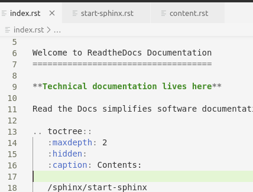
The content in Navbar.
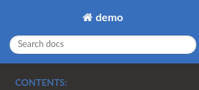Creating Navbar-item & making new directory and hyprlinking it into the index.rst.¶
Create a new folder in your, make a New file inside that folder with .rst.
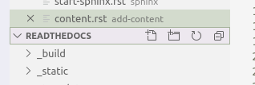
Example¶
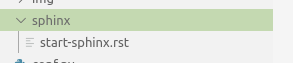
Open file inside that folder & Give it a name ——, now under them give equal’s to sign as show in figure.¶
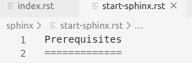
To include the file into the wesite, add location of the fie into toctree into index.rst.¶
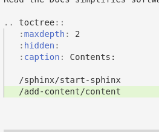 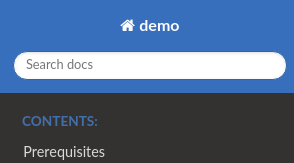Note
As soon as you include the file location into toctree it will pop-up in website. When ever you create new folder don’t forget it to add it into toctree.
Adding sub-item into Navbar element, sub headings, some highlight text & adding images.¶
Adding sub -item in the Navbar using —— under the content as show in the figure.
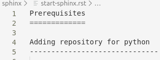
Note
The content will show up on the UI.
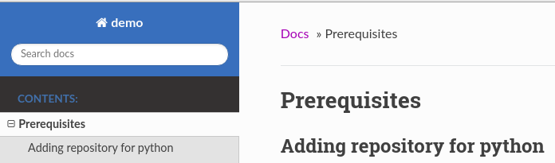Adding image in the website Create new folder named img & add the images.¶
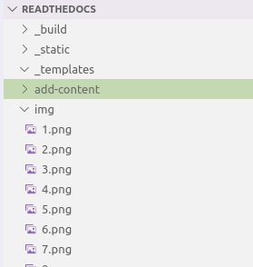
Use the path of the folder & use it where ever you want.¶
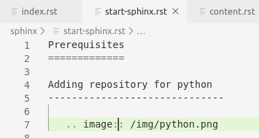
Highlighting any of the text in website.¶
Put your content insde **--**.
Adding images in the site use image restructured text & give the path of the image.¶
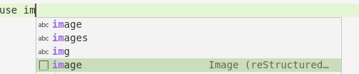Adding any note, important message, or any peace of code.¶
for writing note use the restructured text for note.
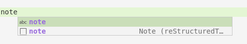for important message
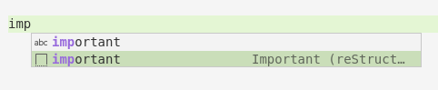For any peace of code
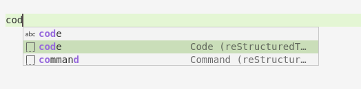